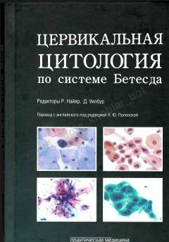

ЦЦBachadon bo'yni sitologik tekshiruvlari uchun Bethesda tizimi bo'yicha xalqaro qo'llanma.
Ushbu kitob bachadon bo'yni saratonini aniqlashda qo'llaniladigan Bethesda tizimi bo'yicha sitologik tekshiruvlar uchun qo'llanma hisoblanadi. Unda sitopatologik tahlil mezonlari, tasniflash tamoyillari va klinik amaliyotda qo'llash bo'yicha batafsil tushuntirishlar keltirilgan.